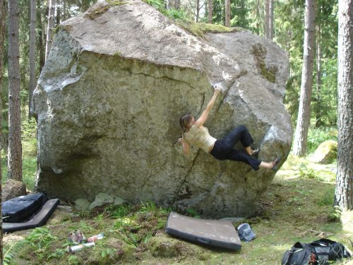

Kategori:Uppsala
Fint litet område nära stan. 10-15 block med bra höjd och god stenkvalitet. Stenarna ligger i en luftig och öppen granskog. Generellt sett mycket bra landningar på mossa. Hämta pdf-förare genom att klicka på länken under bilden.
Media:Lilla_Bärsta.pdf
Parkera på vid avfarten mot Hammarskog på gamla busshållplatsen. Åk EJ upp på den privata grusvägen. Gå upp på en liten grusväg, förbi ett lågt block på åkern. Det första blocket ligger på vänster sida strax efter skogsbrynet.
Bra lekmöjligheter. Lite mygg. Skuggigt. Möjligt att nå med terrängående barnvagn typ Chariot och liknande.
Copyright (C) Permission is granted to copy, distribute and/or modify this document under the terms of the GNU Free Documentation License, Version 1.3